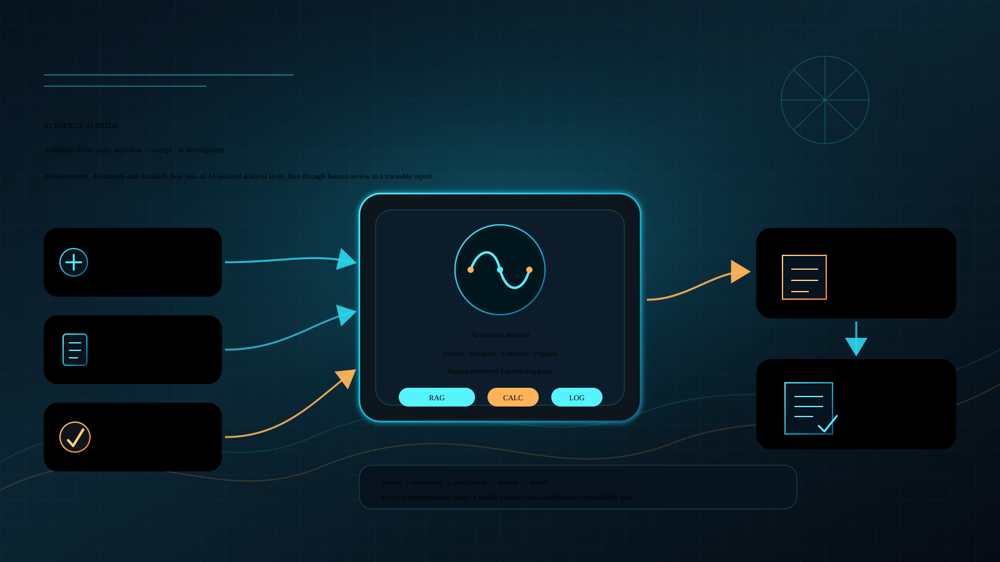

Electrical engineering researcher, energy-efficiency specialist,
applied measurement engineer, PhD, and accredited energy auditor in
Kazakhstan.
His public trajectory connects energy facilities and energy audit
practice with PhD research on electrical systems, applied
measurement, diagnostics, teaching, and AI-assisted engineering
initiatives.
Electrical systems, energy efficiency, and measurement
Iskander Kurabayev is an electrical engineering researcher,
energy-efficiency specialist, applied measurement engineer, PhD,
and accredited energy auditor in Kazakhstan. His work connects
electrical power systems, mining facilities, energy saving,
measurement, and diagnostic methods.
The public profile is intentionally factual: it avoids private
contact details, document scans, certificate numbers, citation
metrics, and unsupported product or affiliation claims.
Method stack
Measure → Model → Diagnose → Verify
Measure
Signals, insulation parameters, and measurement inputs.
Model
Admittance, conductance, susceptance, and vector diagnostics.
Diagnose
Ungrounded AC systems, isolated-neutral context, and voltage diagnostics.
Verify
Energy audit, engineering review, and AI-assisted traceability.
Education
Academic background
PhD
PhD in Electrical Engineering / Electrical complexes and systems.
MSc
Master of Technical Sciences in Electrical Power Engineering.
Spec.
Specialist degree in industrial power supply / engineer-electrician.
Professional trajectory
From facilities to research and teaching
Public-safe experience includes energy expertise, energy audit,
electrical facilities, measurement, diagnostics, and teaching in
energy-related disciplines.
Teaching areas include industrial controllers, introduction to
energy and automation, automated electric drive, energy saving, and
energy efficiency.
Field-to-lab bridge
Energy systems → audit/expertise → measurement → AI-assisted workflow
Energy systemsAudit / expertiseMeasurementAI-assisted workflow
Research focus
Insulation, earth-fault current, and diagnostics
Public research interests include insulation parameters, ungrounded
and isolated-neutral AC systems, earth-fault current, admittance,
conductance, susceptance, and voltage diagnostics.
Electrical power systems
Mining facilities
Measurement methods
Diagnostic methods
Engineering practice
Energy audit and applied measurement
Engineering practice is presented at a public-safe level: energy
expertise, energy audit, electrical facilities, energy saving,
measurement systems, and diagnostics without client names, facility
details, contracts, or private evidence.
AI Engineering Lab
Roadmap initiatives under review

AI Energy Auditor and STM32 / measurement laboratory are
in-development public roadmap initiatives. They are not presented
as launched products, commercial platforms, or validated accuracy
claims.
Selected publications
Works connected with insulation parameters and ungrounded AC systems
2019
Experimental studies of a developed method for determining insulation parameters in a network with isolated neutral voltage up to 1000 V
2022 / DOI metadata verified
Mathematical description of the method for ungrounded AC systems to determine the network insulation
No citation counts, h-index, or completeness claims are published here.
Patents / intellectual property
Cautious public status
Public-safe patent topics include a Eurasian patent on measuring
insulation parameters of isolated-neutral electrical networks using
complex-plane quadrants, and a Kazakhstan patent on measuring
insulation parameters of isolated-neutral electrical networks using
symmetrical components.
Patent registry verification remains pending; this is not a claim
of a complete verified patent portfolio.
EA041128B1 has a public Google Patents page; Kazakhstan patent
registry verification remains pending for the full portfolio.
Recognition
Energy-sector recognition
Honored Energy Worker, Kazakhstan Electric Energy Association, 2016Honored Energy Worker, Ministry of Energy of the Republic of Kazakhstan, 2018Заслуженный энергетик, Ministry of Energy of the Republic of Kazakhstan, 2023Award for contribution to energy saving, 2024
Public evidence checked for this profile layer includes ORCID,
Scopus Author ID, DOI / Crossref metadata, publisher pages, and an
official university profile. No citation metrics or private contact
details are published.
Contact status
Public contact route pending approval
The site intentionally does not publish phone, private email,
messenger links, private addresses, or contact forms. A public route
can be added after explicit review.